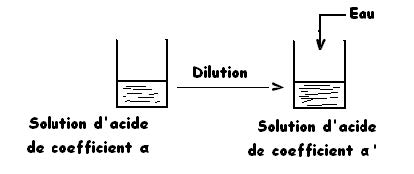
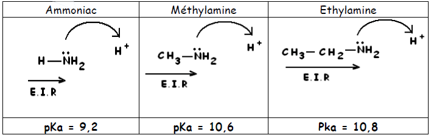

Chapitre III : Couples acide/base
I - L’acide éthanoïque
1. L’acide éthanoïque :
Au dessus de 17°C l’acide éthanoïque pure est un liquide incolore non conducteur d’électricité et très caustique. Il est, en effet, uniquement constitué de molécules.
- FB : CH3COOH
- FSD : CH3-COOH
2. La solution aqueuse d’acide éthanoïque :
Si l’on ajoute de l’eau à l’acide éthanoïque pur, on obtient une solution d’acide éthanoïque susceptible de conduire le courant électrique.
Versons à présent quelques gouttes de B.B.T. dans une solution diluée d’acide éthanoïque. L’indicateur vire du vert au jaune. La solution est donc acide : elle contient plus d’ions hydronium H3O+ que l’eau pure.
CH3COOH + H2O ⇌ CH3COO- + H3O+
Des molécules CH3COOH réagissent avec des molécules H2O pour donner des ions hydronium H3O+ et des ions éthanoate CH3COO-.
3. Coefficient d’ionisation :
Le coefficient d’ionisation α est le rapport de la quantité de molécules d’acide dissociées à la concentration initiale de l’acide.
4. Etude quantitative de la solution d’acide éthanoïque :
Soit une solution d’acide éthanoïque (vinaigre) à 10-2 mol/l et de pH = 3,4.
+ Exploitation de la mesure du pH :
Conclusion:
4% seulement des molécules d’acide sont ionisés par réaction avec l’eau. Donc l’acide éthanoïque est un acide faible.
5. Le couple acide éthanoique-ion éthanoate
La solution d’éthanoate de sodium est conductrice et basique. Les ions se séparent et il y a réaction entre les ions éthanoate et l’eau.
CH3COONa → CH3COO- + Na+ suivi de : CH3COO- + H2O ⇌ CH3COOH + OH-
L’acide éthanoique et l’ion éthanoate forment un couple acide-base. Les deux espèces sont dites acide et base "conjugués".
CH3COOH ⇌ CH3COO- + H+
Exercice d’application :
Soit une solution d’acide éthanoïque (vinaigre 8°) de densité 1,009, de pourcentage massique 8% et de pH = 2,34. Calculer le coefficient d’ionisation α.
6. Mise en évidence de l’équilibre chimique:
a. Réaction Inverse :
- Expérience :

L’addition d’éthanoate de sodium fait disparaître l’excès d’ions hydronium. Les ions sodium étant spectateurs, il s’agit d’une réaction des ions éthanoate.
CH3COONa → CH3COO- + Na+ suivi de : CH3COO- + H3O+ → CH3COOH + H2O
b. Déplacement de l’équilibre:
- Expérience:

Quand on ajoute de l’eau (dilution), le coefficient d’ionisation augmente : la réaction donnant les ions devient plus importante.
La réaction de l’acide éthanoïque et de l’eau est un équilibre chimique :
CH3COOH + H2O → CH3COO- + H3O+
II - Ammoniac et Ammoniaque
1. Ammoniac:
L’ammoniac est un gaz à odeur très forte, irritant pour les voies respiratoires.
On l’utilise pour le nettoyage et la désinfection des sanitaires.
- FB : NH3
- FD :
2. Réaction de l’ammoniac avec l’eau :
L’ammoniac est un gaz très soluble dans l’eau. La solution obtenue est basique :
NH3 + H2O → NH4+ + OH-
3. Coefficient d’ionisation:
Le coefficient d’ionisation α est le rapport de la quantité des molécules d’ammoniac dissociées à la concentration initiale de l’ammoniac :
4. Etude quantitative de la solution:
Soit une solution d’ammoniac de molarité 10-2 mol/l et de pH = 10,6.
+ Exploitation de la mesure du pH :
+ Electroneutralité:
En négligeant la molarité en H3O+ devant celle en OH-
[NH4+] = [OH-] = 4.10-4 mol/l
+ Conservation de la matière:
C = [NH4+] + [NH3] ⇒ C - [NH4+] = 10-2 - 4.10-4 = 9,6.10-4 mol/l
Les molécules NH3 constituent une population majoritaire alors que les ions NH4+ et OH- forment une population minoritaire. On dit que la solution d’ammoniac est faiblement basique.
+ Coefficient d’ionisation :
+ Conclusion:
4% seulement des molécules d’ammoniac sont ionisées par réaction avec l’eau.
Donc l’ammoniac est une base faible.
Exercice d’application :
Soit une solution d’ammoniac à 20% (en masse) de densité d = 0,92 et de pH = 12,15. Calculer le coefficient d’ionisation.
5. Mise en évidence de l’équilibre :
a. Réaction inverse :
+ Expérience :
L’addition de chlorure d’ammonium fait disparaître l’excès d’ions hydroxyde. Les ions chlorure étant spectateurs, il s’agit d’une réaction des ions ammonium.
NH4Cl → NH4+ + Cl- puis NH4+ + OH- → NH3 + H2O
b. Déplacement de l’équilibre :
Quant on ajoute de l’eau, le coefficient d’ionisation augmente : la réaction donnant les ions devient plus importante. La réaction de l’ammoniac et de l’eau est un équilibre chimique :
NH3 + H2O ⇌ NH4+ + OH-
6. Couple ion ammonium-ammoniac :
La solution de chlorure d’ammonium est conductrice et acide. Les ions se séparent et il y a réaction entre les ions ammonium et l’eau.
NH4Cl → NH4+ + Cl- puis NH4+ + H2O ⇌ NH3 + H3O+
L’ion ammonium et la molécule d’ammoniac sont liés par un équilibre chimique. Ils forment un acide et une base conjugués.
NH3 + H+ ⇌ NH4+
7. Quelques définitions :
- un acide est une espèce susceptible de céder au moins un proton H+.
Exemple :
HCOOH → HCOO- + H+
H3O+ → H2O + H+
- un acide est dit faible en solution aqueuse si sa réaction avec l’eau n’est pas totale. Dans une solution aqueuse d’acide faible de concentration C, [H3O+] ≺ C, soit, ce qui est équivalent, pH ≻ -logC.
- une base est une espèce susceptible de capter au moins un proton H+.
Exemple :
NH3 + H+ → NH4+
CH3COO- + H+ → CH3COOH
- une base est dite faible en solution aqueuse si sa réaction avec l’eau n’est pas totale. Dans une solution aqueuse de base faible de concentration C, [OH-] ≺ C, soit ce qui est équivalent, pH ≺ 14 + logC.
- Deux espèces acide et base sont dites conjuguées si elles constituent un couple acide base, c'est-à-dire si elles sont reliées par le schéma formel suivant : Acide ⇌ Base + H+
Un couple acide base est toujours noté acide/base.
8) Constante d’acidité :
Considérons l’acide AH, acide du couple AH/A-. Lors de sa mise en solution, AH se dissocie partiellement selon la réaction d’équation bilan :
AH + H2O ⇌ A- + H3O+
Lors de la mise en solution d’un acide faible, les concentrations des espèces en équilibre sont liées par une constante d’équilibre Ka appelée constante d’acidité du couple AH/A- ou constante de dissociation de l’acide AH dans l’eau.
Par définition, la constante d’acidité du couple AH/A- s’écrit :
III - Réaction Acide Base
Une réaction acide base est un transfert de protons.
- Exemple :
- Exemple :
IV - Ampholyte
Une espèce qui peut se comporter comme un acide et comme une base est un ampholyte.
Exemple :
Eau : H2O + H+ ⇌ H3O+
H2O ⇌ OH- + H+
L’ion hydrogénocarbonate :
HCO3- + H+ ⇌ H2O + CO2
HCO3- ⇌ H+ + CO32-
L’ion hydrogénosulfate :
HSO4- + H+ ⇌ H2SO4
HSO4- ⇌ H+ + SO42-
V - Forces relatives des acides faibles
1. Force d’un acide faible :
Soit un acide faible AH mis en solution dans l’eau. La concentration totale est C.
AH + H2O ⇌ A- + H3O+
+ Conséquences:
(1) α Augmente si C diminue.
- Au plus on rajoute de l’eau, au plus l’ionisation augmente.
(2) α est grand si le Ka est grand (ou le pKa est petit)
- Un acide faible sera plus fort qu’un autre acide faible si sa constante d’acidité est plus grande et son pKa plus petit.
2. Force d’une base faible :
Une base est d’autant plus faible qu’elle capte plus facilement un proton H+.
Une base est d’autant plus forte que la constante Ka du couple auquel elle appartient est faible, et donc que le pKa correspondant est élevée. Pour comparer deux bases faibles, il suffit de comparer le pH de deux solutions de même concentration de ces bases : La base la plus forte est celle qui donne la solution de pH le plus élevé. Pour deux couples acide/base, A1/B1 et A2/B2, si l’acide A1 est plus fort que l’acide A2, pKa1 ≺ pKa2 et la base B1 est plus faible que la base B2.
3. Interprétation :
a. Cas des acides carboxyliques :
L’acidité est due à la rupture de la liaison O-H avec départ du noyau de l’atome d’hydrogène (proton) et rétention du doublet d’électron par l’atome d’oxygène.
Le radical R- intervient en favorisant ou en défavorisant cette rupture.
a-1) Effet inductif attractif :
si le radical R contient un ou des atomes électronégatifs (atomes attracteurs d’électrons) comme F, Cl ; Br, I… il va attirer le doublet de la liaison R-C ; ce déplacement des électrons de liaison se fera sentir de proche en proche et induira un déplacement du doublet d’électrons O-H vers l’oxygène. Ce qui va dans le sens de la rupture et rend la molécule plus acide.
a-2) Effet inductif répulsif :
si le radical R contient un ou des atomes peu électronégatifs (atomes donneurs d’électrons) comme C et H, il va repousser le doublet d’électron de la liaison R-C ; ce déplacement d’électrons de liaison se fera sentir de proche en proche et induira un déplacement du doublet de liaison O-H vers l’hydrogène qui s’oppose à la rupture et rend la molécule moins acide.
b. Cas des bases azotés :
Dans le cas des bases azotées, les propriétés basiques sont dues au fait que l’atome d’azote prête son doublet électronique libre à un proton. Le caractère basique est accentué par un effet inductif électro donneur (ou inductif répulsif) qui va dans le même sens que le déplacement du doublet électronique.

VI - Domaine de prédominance